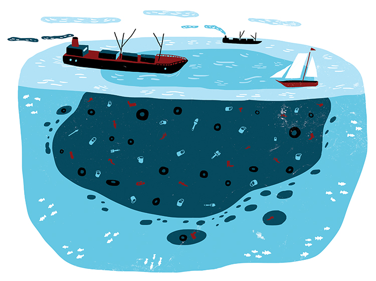

Let's map microplastics
Organization
Layer 1: Plastic Production
Layer 2: Plastic Consumtion and Disposal
Layer 3: Enviromental Effects
This website contains the text, pictures, links, and other digital resources which accomany our microplastics map. Click a number to see the corresponding information. Note: the data points selected represent the most extreme information, not the totality of the data.
Our Team: Naveen Ram, Shiv Makim, Clark Wakeland, Tyler Branscombe, Jared Collins
Check out our sources here.